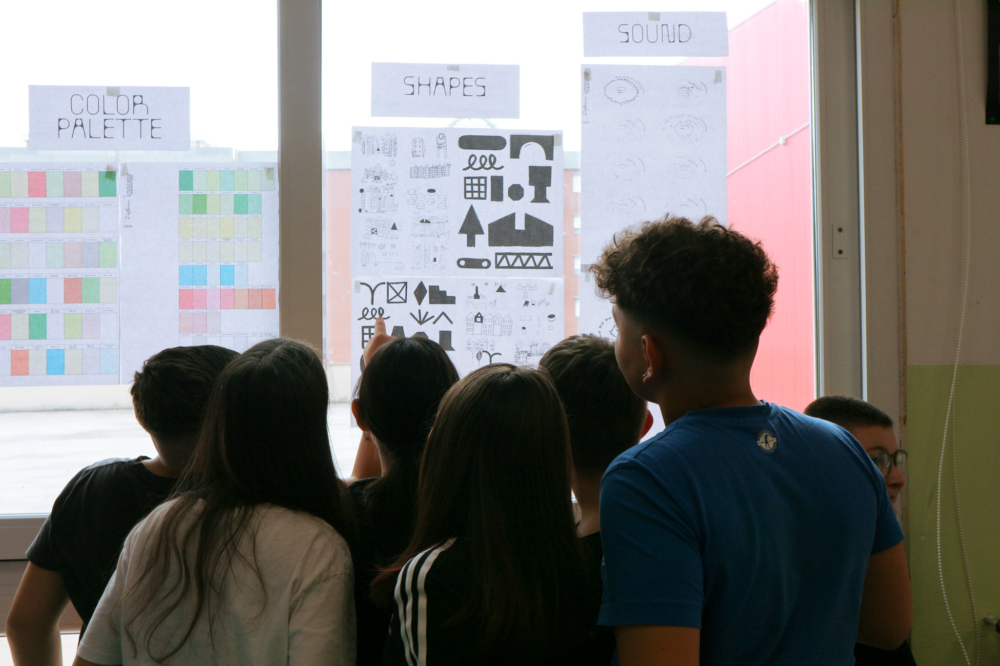
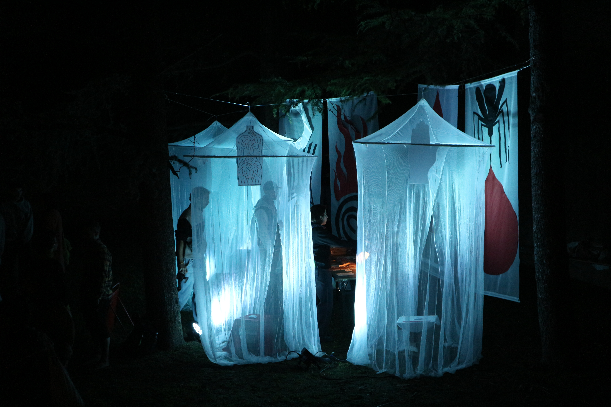
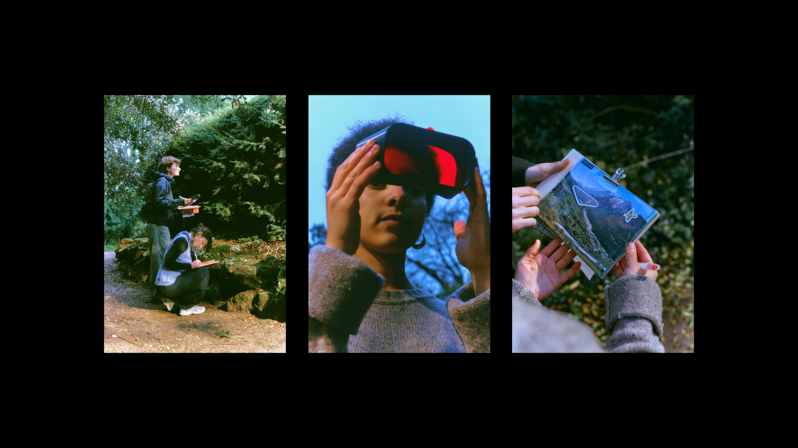
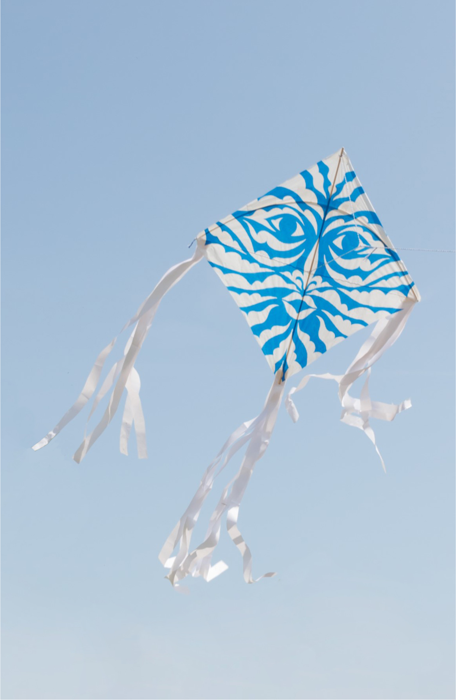
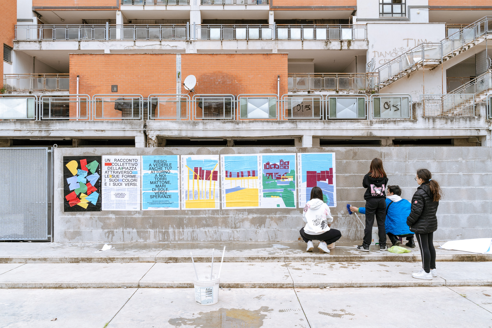
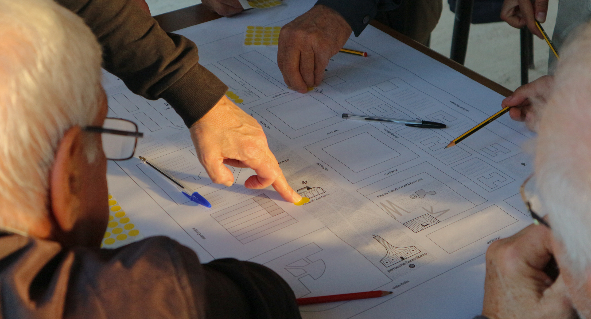

Voci Plurali | Narrating Tiers Lieux
Brand, storytelling and space design for iMorticelli

Microfficine del Possibile | Reading the city
Neighbourhood identity workshop

La casa delle Zanzare
Installation at Crem'amare Festival

Paesaggio Prossimo | Observing the alpine anthropocene
Landscape reading workshop

Ventografie / Kite as a craft manifest
Kite building workshop

Menabò | Research on Genova city ritms
City-telling installation

Piazza Pazza | Writing the city
City-telling workshop

Parapiglia | Urban Takeover Festival
Event and visual design

Fotosintesi Urbana | A wild city
Botanic mapping and solar printing

Microfficine | Crazytypo
Typography workshop

Lenticchie | Emotional Cartography
Social design and community workshop